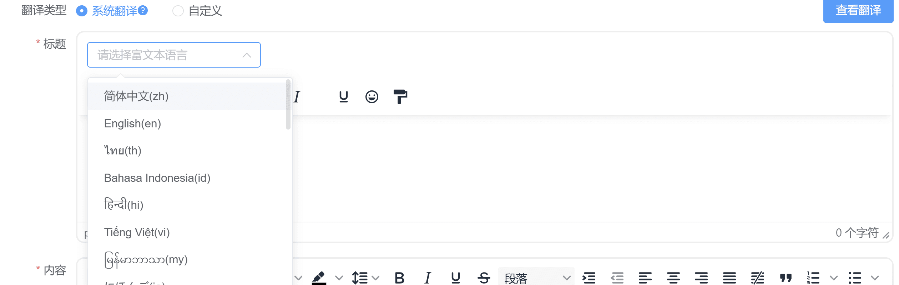
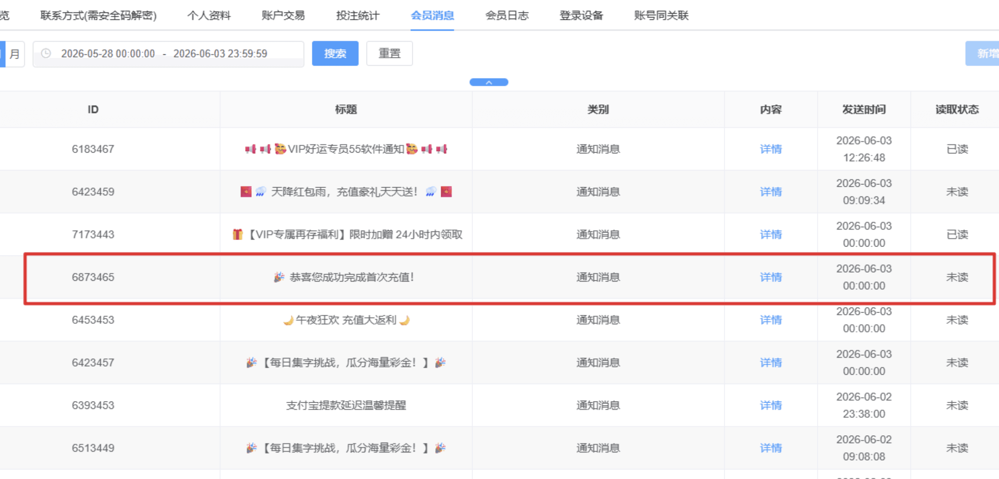
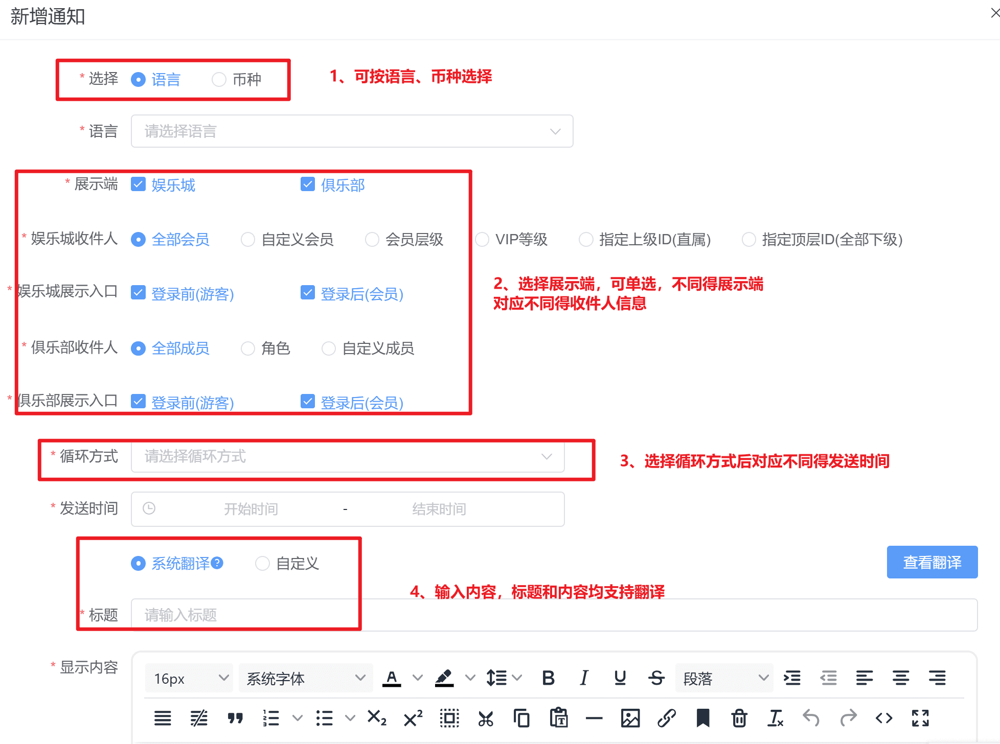
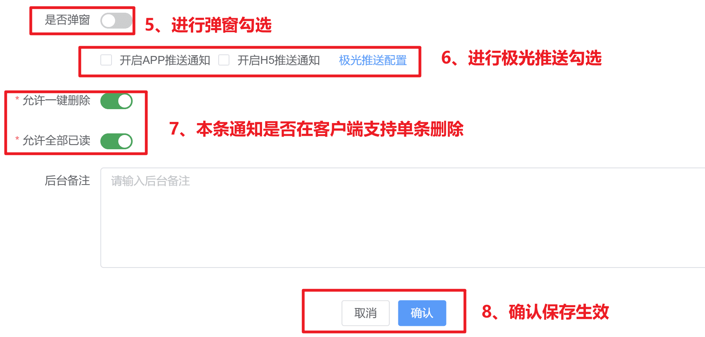
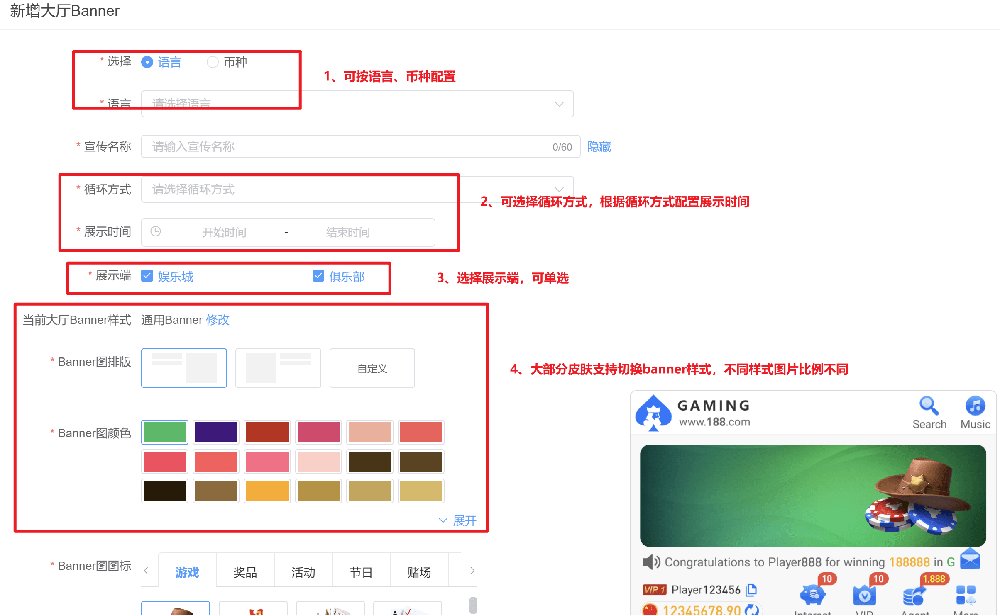

一、通知消息
特别说明：在进行消息通知推送前，必须在极光配置中勾选“开启 Web 推送通知”或“开启 APP 通知”选项，只有勾选后，通知才能成功推送到目标用户。
翻译方式变更：因谷歌翻译会改变原文案，现可勾选检查原文案是否输入正确，支持修改，确保修改后的内容与客户端展示一致

1. 搜索功能说明
（1）支持筛选条件
① 单一条件筛选：可以通过设置单个条件（如标题、状态、时间范围等）快速查找对应的消息通知。
② 多条件组合筛选：允许同时设置多个条件进行组合查询，进一步精准定位目标消息。
（2）支持模糊搜索
① 在搜索框中输入关键词（如部分标题、收件人等），系统会通过模糊匹配显示相关的消息通知。
② 适用于无法记清完整信息的场景，提高查找效率。
2. 新增功能说明
（1）会员校验机制
① 在选择以下新增方式时，系统会自动校验会员账号的有效性：
自定义会员：填写会员账号并校验其存在性。
指定上级ID（直属）：填写直属上级ID，系统校验并关联其直接下属会员账号。
指定顶层ID（全部下级）：填写顶层ID，校验并关联其所有下级会员账号。
② 如果系统检测到输入的会员账号不存在，会弹出警示框。
警示框内容：明确列出不存在的账号。
（2）新增展示端设置： 当选择【俱部】作为通知展示端时，可进一步选择具体的俱乐部收件人，以确保通知精准投递到目标人群。
（3）新增循环方式：可根据实际需求选择以下循环发送模式：
① 一次性：通知仅发送一次，不重复。
② 每天：通知每日定时发送。
③ 每周：通知每周的指定时间发送（如每周一上午10点）。
④ 每月：通知每月的指定日期发送（如每月1号下午3点）。
（4）新增触发条件：可按条件自动发送精准通知
具体场景：
注册成功——新账户注册成功后自动触发通知推送
首次充值成功——账户首次充值成功后自动触发通知推送
充值成功——账户每次充值成功后自动触发通知推送（包含首次充值成功）
首次提现成功——账户首次提现成功后自动触发通知推送
提现成功——账户每次提现成功后自动触发通知推送（包含首次提现成功）
提现失败——包含后台拒绝、订单取消、订单拒绝
修改密码——账户每次修改登录密码成功后自动触发通知推送
修改手机——账户每次修改账户绑定手机号成功后自动触发通知推送
修改邮箱——账户每次修改账户绑定邮箱成功后自动触发通知推送
开启Google安全码——账户每次开启成功后自动触发通知推送
关闭Google安全码——账户每次关闭成功后自动触发通知推送
活动奖励领取成功——账户每次领取成功后自动触发通知推送，范围优惠模块所有领取成功都触发（仅支持用户手动领取时触发）
新IP登录——账户在新的IP地址登录后自动触发通知推送
① 勾选俱乐部时不展示触发条件
② 循环方式选择：一次性时才能勾选触发条件
③ 相关优惠通知根据账变情况进行推送
注意：充值提现后台创建订单非用户操作，无法触发通知
（4）收件人新增指定会员标签发送，勾选后对应会员标签下所有ID均能收到通知
（5）收件人新增待领取会员，可向待领取会员直接发送优惠信息
①选择待领取会员后，下方将展示活动类型、活动信息、领取方式、发送时间
②支持会员在弹窗或者消息页面直接领取，也支持点击前往活动页面领取
③输入配置文案后可参考右边的预览图
注意：
1、如果手动关闭活动，那已触发的消息将不再推送到客户端，不能领取奖励，正常到期结束的活动推送不受影响
2、如在活动页面修改相关配置导致不满足领取条件时，客户端接收到消息点击会展示错误提示，建议要及时检查活动以及消息两端的配置，避免造成困扰
3、触发类消息在【会员资料-会员消息】处展示全部信息，实际未发送给对应会员，以【消息通知】实际收件人为准

（6）新增展示入口，支持勾选H5/PWA/原生APP/iOS描述签/技术APP/马甲包/桌面快捷方式/TG小程序
（7）新增操作类型，支持勾选/Windows/Mac/Android/iOS
3. 页面及操作说明
新增消息后，需在当前页面完成审核与发布，具体操作说明如下：
（1）发布：点击【发布】按钮，确认后消息即可发布成功，状态更新为已发布。
（2）修改：
① 支持修改以下字段内容：收件人/展示时间/停留时间/显示内容
② 保存后状态：修改完成后，该消息状态变更为待发布，并重新启用【发布】按钮供后续操作。
（3）详情：点击【详情】按钮，系统弹出详情页面，显示以下字段信息：
① 收件人：接收通知的用户或用户组
② 开始时间/结束时间：通知的展示时间段
③ 间隔：发送通知的周期或频率
④ 操作人/操作时间：记录操作人员和操作时间
⑤ 状态：当前消息的状态（待发布/已发布/停止等）
⑥ 标题/内容：通知的标题及详细内容
（4）停止：点击【停止】按钮，立即停止该消息在跑马灯的展示，状态更新为已停止。
（5）删除：点击【删除】按钮，可永久删除该条消息记录。（注意：删除操作不可撤销，需谨慎执行。）
（6）复制创建：后台新增一条对应消息，点击后进入创建消息页面，也支持修改，点击保存后状态为待审核，取消则退出复制创建页面
4. 客户端【一键已读】、【全部删除】开关合并为【客户端配置】总开关，如需开启，请重新勾选权限
（1）【一键已读】功能
① 在通知和公告页面分别支持配置该功能。
② 功能开启后，用户在大厅中可点击“一键已读”，快速将所有消息标记为已读状态。
③ 单条通知新增时也支持勾选
（2）【全部删除】功能
① 配置该功能后，允许批量删除所有通知或公告消息，提升管理效率。
② 注意：删除操作需经过确认，避免误删。
③ 单条通知新增时也支持勾选
（3）生效时间说明
① 通知和公告的“一键已读”及“全部删除”功能将在大厅生效。
② 生效时间：由于大厅缓存机制，操作生效预计需要约15分钟，请耐心等待。


5. 极光推送通知新增上传图片
在通知消息和公告消息分别支持配置该功能。
（1）上传推送缩略图
① 推送方式勾选“开启H5推送通知”，找到“推送缩略图”上传区域。
② 点击“上传按钮”，选择您要上传的图片。
③ 确保缩略图符合尺寸和格式要求。
（2）上传推送宣传图
① 推送方式勾选“开启APP推送通知”/“开启H5推送通知”，找到“推送宣传图”上传区域
② 点击“上传按钮”，选择您要上传的图片。
③ 确保宣传图符合尺寸和格式要求。
（3）注意事项
① 标题和内容限制：为了确保推送通知能够正常发送，请使用简短的标题和内容。
② 浏览器兼容性：H5推送缩略图仅支持 Chrome、Firefox、Opera 和 Edge 浏览器。H5推送宣传图仅支持 Win 平台的 Chrome、Opera 和 Edge 浏览器。
③ 因浏览器的无痕模式会限制部分功能，故用户开启无痕浏览时，会无法收到推送通知。
④ 预览图效果仅供参考，以实际推送效果为准。
二、跑马灯
新增功能：展示时间
① 开启后，前台跑马灯会展示通知的发布时间，用户可查看具体时间。
② 关闭后，不展示发布时间，仅显示通知内容。
新增俱乐部展示端: 支持选择【俱乐部】作为展示端，操作方式与【通知消息】相同，请参考通知消息说明。
三、公告消息
功能与操作说明: 公告消息的功能与操作方式，与【通知消息】和【跑马灯】基本一致，请参考相关说明。
四、大厅banner
页面操作及说明: 由于新增后状态切换较多，请仔细查看每个状态对应的操作，具体操作方式与【通知消息】和【跑马灯】相似。
① 审核发布：新增后，需点击【发布】按钮，确认后才会生效。
② 修改：直接调整 Banner 对应的宣传内容。
③ 详情：点击查看 Banner 内容详情，注意详情仅可查看，不支持修改。
④ 停止：停止对应 Banner 的展示。
⑤ 删除：删除该条 Banner 数据，操作不可撤销。
俱乐部展示限制
① 若选择【俱乐部】作为展示端，俱乐部的展示内容不支持跳转至优惠或活动页面。
② 勾选【娱乐城】配置则保持原样，展示无任何限制。
客户端层级展示限制
①如配置跳转活动，会根据活动设置的相关层级进行展示，未在对应层级范围的用户将无法查看对应banner
②配置跳转时，只有对应活动时间开始后才能跳转

五、加载页轮播
页面操作及说明：由于新增后状态切换较多，请仔细查看每个状态对应的操作，具体操作方式与上方 Banner 配置相似，请参考相关说明。
① 审核发布：新增后，需点击【发布】按钮，确认后才会生效。
② 修改：直接调整轮播的宣传内容。
③ 详情：点击查看轮播内容详情，注意详情仅可查看，不支持修改。
④ 停止：停止对应轮播内容的展示。
⑤ 删除：删除该条轮播数据，操作不可撤销。
适用范围: 此轮播效果适用于 APP 端页面。
六、大厅弹窗
页面操作及说明： 由于新增后状态切换较多，请仔细查看每个状态对应的操作，具体操作方式与上方 Banner 配置相似，请参考相关说明。
① 审核发布：新增后，需点击【发布】按钮，确认后才会生效。
② 修改：直接调整弹窗的宣传内容。
③ 详情：点击查看弹窗内容详情，注意详情仅可查看，不支持修改。
④ 停止：停止对应弹窗内容的展示。
⑤ 删除：删除该条弹窗数据，操作不可撤销。
俱乐部展示限制:
① 若选择【俱乐部】作为展示端，俱乐部的展示内容不支持跳转至优惠或活动页面。
② 勾选【娱乐城】配置则保持原样，展示无任何限制。
客户端层级展示限制
①如配置跳转活动，会根据活动设置的相关层级进行展示，未在对应层级范围的用户将无法查看对应弹窗
②配置跳转时，只有对应活动时间开始后才能跳转
六、智能参数通知
功能背景： 方便批量发送带有参数的通知信息
操作说明：
1、点击新增，选择语言和币种
2、标题：先选择语言，再配置示例{{account}}的专属大奖，account为会员账号
3、内容：富文本框中有对应参数可直接点击
{{field1}}~{{field15}}分别对应上传文件中的导入字段1~导入字段15，可自行变更排序
{{copy}}为复制icon，放在变量参数后，客户端展示对应的复制按钮，点击复制变量参数内容
{{receive}}为领取按钮，业主在后台配置后，客户端展示对应皮肤配色下的领取按钮（固定居中展示），客户端点击跳转至优惠待领取页面；
4、模板下载，按照模板内容编辑好再将文件上传，编辑发送时间，注意：上传不存在的会员账号会导致解析失败
5、上传后的状态为待发送，到发送时间发出后变为已发送，支持已发送的信息撤回